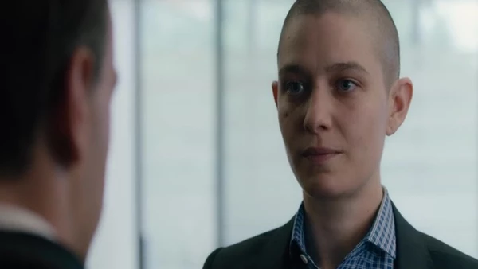
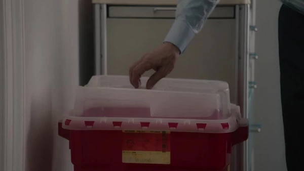
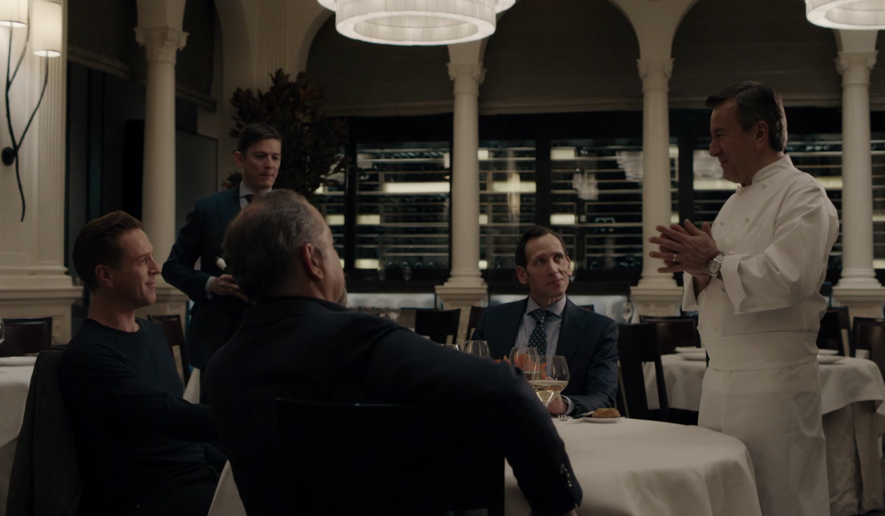

06旧金山 · 第二轮推介
技术没有归属，故事就没有封口。

本集截图：泰勒指出项目不拥有所依赖的技术；Showtime / SIMKL剧情事实新的项目想用语音辨识建立可追溯身份。泰勒立即指出创业者并不拥有拟改造的技术；对方接受这个“死星缺口”。会后泰勒与 Oscar 从排气口聊到阿喀琉斯，形成默契，但泰勒因已有晚间安排而婉拒晚餐。[1][2]
这一场为什么重要 · 个人解读
识别缺陷没有毁掉会谈，反而让认真做事的人有机会修正它。与纽约各方遮挡缺口的办法相比，这场交流容许陌生人提出的问题被明确说出。两人的共同语言既是知识，也是一种不必隐藏能力的轻松；此时的亲近无需借未来结果来解释。
因此 → Oscar 需要走进泰勒实际选择的夜晚。
07Gilbert 的研究与会面地点
最详细的故事，仍不是验证。

本集截图：医生讲述处理载玻片的过程；这是口述配合的回溯画面；Showtime / SIMKL剧情事实阿克斯的顾问施压 Gilbert 的研究经费和实验室租约。医生再次声称载玻片已销毁，并逐步讲述先想到废物箱、再走去实验室窑炉的过程。阿克斯仍不肯只接受可信的口述，要把残余风险彻底排除。[1][2]
这一场为什么重要 · 个人解读
口述的具体程度能制造真实感，无法提供独立确认。相应回溯画面跟随医生的叙述，不能当作全知镜头替他说法背书。阿克斯选择动研究项目，是因为私人生活里找不到好下手的软肋；他越能伤害医生，也越让医生需要另找保护。
因此 → 压力推动医生寻找能保住执照的出口。
08Daniel 餐厅 / 次日公司
把合规请到家里，再画出边界。

本集截图：包场晚餐用于重订 Spyros 的位置；Showtime / Fan Fun with Damian Lewis剧情事实Spyros 识破 Bill 用做多配合信用违约掉期包装同一押注。阿克斯包场宴请 Spyros，要求他帮助公司把风险推到边缘，停止以举报相威胁；也明确本次 Mendham 交易取消。次日 Bill 被要求公开道歉，并获知今后创意交易改走 Victor 的基金。[1][2]
这一场为什么重要 · 个人解读
阿克斯同时给了归属和禁令：Spyros 可以被称为家人，却不能以外部监管者自居；Bill 可以留下，却不能把已经两次留下记录的交易继续做下去。把未来交易改道不等于本次成功绕关。随后 Bill 撞坏 Spyros 的车，则暴露公开服从与私人愤怒的距离。
因此 → 暂时修复组织关系，不能消除成员怨气。